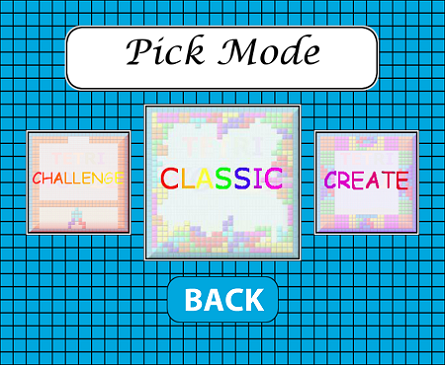
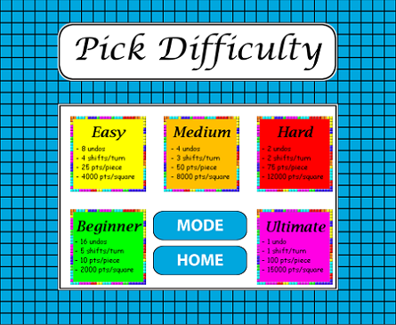
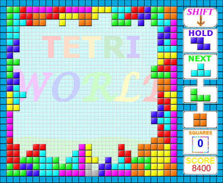
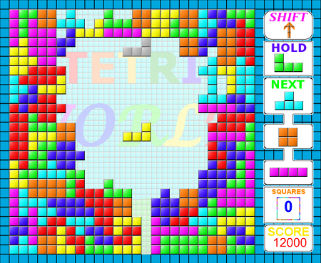
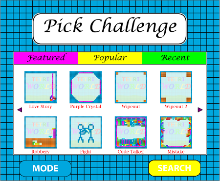
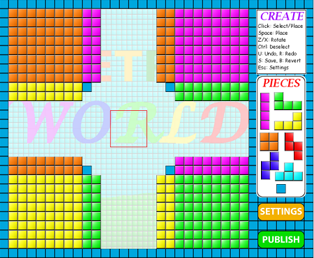

Background
In late May 2016, while thinking about a new game to add to my collection,
an idea popped into my head to change the way Tetris is played and make the
game more challenging. The initial idea was to have pieces spawn in the
middle of the board, with users being required to clear lines either on the
top or the bottom of the board, with the direction pieces fall to switching
after one is placed. So, I got started developing this new Java game, and
decided to call it TetrisWorld. As I was developing, I wondered, as the
board is a 2-D grid, and changing the gravitational direction of the pieces
is only a matter of mathematical manipulation, why not expand the idea and
make users clear lines in all 4 directions? Moreover, how could I
incentivize the player to change the gravitational direction? The answer is
the basis for TetrisWorld, and it is to have users clear squares rather than
lines. In the following weeks, I was writing code for the game and its GUI,
designing its different pieces and pages along the way. When TetrisWorld was
finished, I wanted to expand it even more, and I wanted to learn how games
are developed in the web (flash). And so, I downloaded Adobe Animate CC,
learned the programming language ActionScript, and got started on developing
TETRIWORLD.
Description and Gameplay
TETRIWORLD is a block puzzle game inspired by Tetris. The objective of the
game is to stay alive by clearing outer squares as pieces are falling. In
the game, arrow keys move the current piece in the arrow's direction. The
arrow key opposite to the current gravity rotates a piece clockwise. Hitting
the Z and X keys rotates a piece as well, clockwise and counterclockwise
respectively. A piece can be saved for future use using the shift key, which
substitutes the current piece with one that is already held. The Ctrl key
changes the gravitational shift of the board, and can only be used after a
piece is placed to prevent indefinite gravity changes. Esc pauses the game,
and likewise, can only be used after a piece is placed to prevent indefinite
pausing. To pardon mistakes, left clicking a piece removes it completely
from the board. The game is over when the stack piles to the 4x4 square
pieces initially spawn in. There are different difficulties for TETRIWORLD,
with each having different starting gravitational speeds, number of gravity
changes (Ctrl) per piece, and number of undos (mouse clicks) per game.



Game Modes
Classic Mode

Classic Mode is the original version of the game. The goal of this mode is
the same as that of TetrisWorld, which is to stay alive by clearing outer
squares. In here, however, users are able to submit their score once a
game is over. The score, as well as the username, number of squares
cleared, and date achieved get stored in a server that the game pulls data
from. Being in the top 10 ensures that your name will be seen in-game,
otherwise, all submitted scores are available under the leaderboards tab
on top of the game.
Challenge Mode

Challenge Mode involves different variations of TETRIWORLD. The challenges
have been submitted by the TETRIWORLD community, and feature different
playing pieces, different starting boards, different spawn areas, and even
different objectives. There are two types of challenges: survival and
timed. For survival challenges, there is no objective, and the goal is to
score the highest possible score given the challenge's layout. For
timed challenges, a goal is stated for the player to meet before a time
limit is up. The objective here is to complete the objective as fast as
possible before time expires. The user can check their status when they
pause the challenge.
Create Mode

In Create Mode, you get to create your own challenges! Create mode
features the ability to place starting pieces for a challenge and make
a custom board. In the settings box for create mode, the user can set
more criteria for the challenge, such as the pieces that will spawn in the
game, where those pieces spawn, time constraints for timed challenges,
squares that count, free tiles necessary to meet objectives, the type
of challenge it is, and more details. The creator can also test out their
challenge, and when it's published, it becomes directly available
in Challenge Mode.
PLAY TETRIWORLD